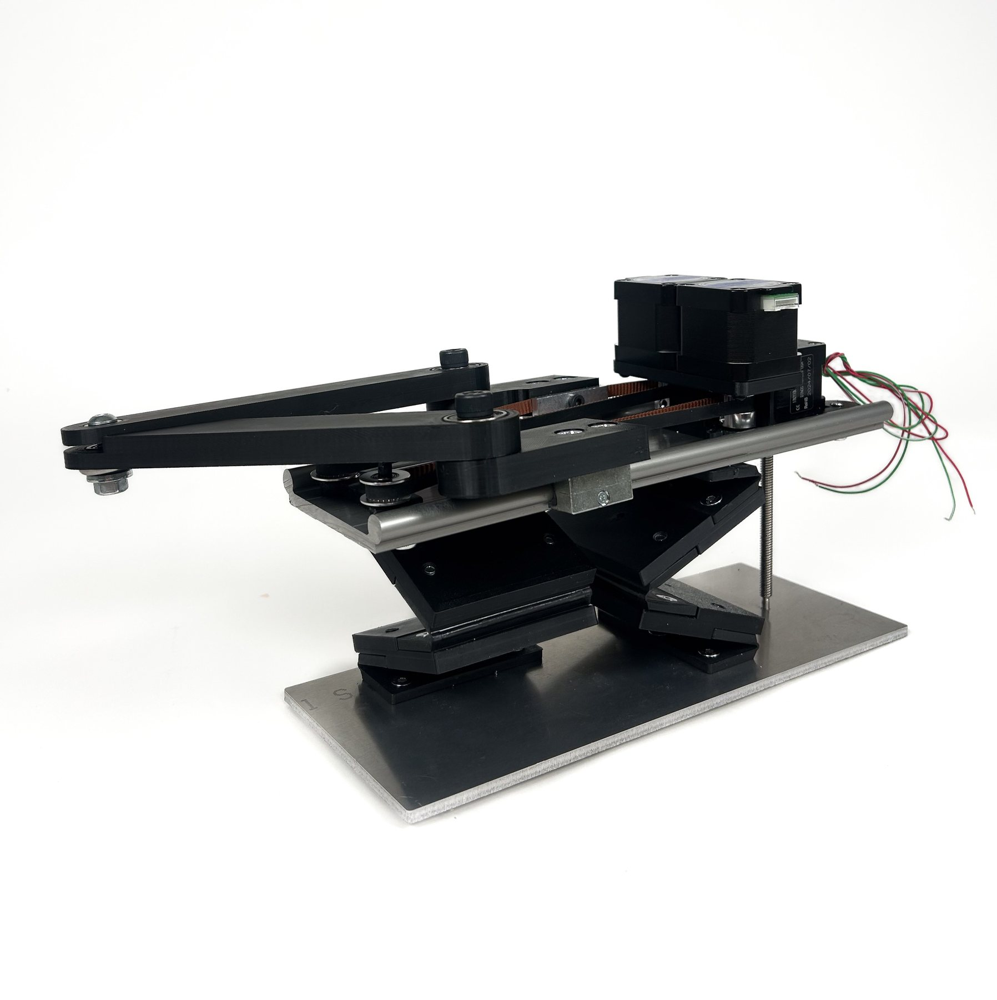

Cantilevered DeltaXY

Design methodology
Machine design
Kinematic modeling/movement system parameterization
LabIdeation Lab, MIT Department of Mechanical Engineering
RoleUndergraduate researcher (UROP)
CollaboratorsIlan Moyer (MIT Ideation Lab), Quentin Bolsee (MIT Center for Bits and Atoms)
TimelineSummer – Winter 2025
Tools
SOLIDWORKS
Python (incl. JAX)
G-code
Google Sheets
FDM 3D printing
Laser cutting
RecognitionACM CHI 2026 Best Paper Award (co-author)
The Cantilevered DeltaXY is a movement system with exceptionally high lateral space efficiency: it lets FabUnit, a bookshelf 3D printer, fit a ~120 × 120 mm build area into 127 mm of shelf width. As an undergraduate researcher in MIT's Ideation Lab, I worked under its creator, Ilan Moyer, on the kinematic model used to calibrate the printer's accuracy, then on a low-cost, easily prototyped version of the architecture. This work contributed to a paper at ACM CHI 2026, which received a Best Paper Award.
Context/Motivation
Over my sophomore summer, I joined the Ideation Lab in MIT's Department of Mechanical Engineering as an undergraduate researcher. My research centered on the Cantilevered DeltaXY, a movement system Ilan Moyer designed for FabUnit — an ultra-thin 3D printer that sits on a bookshelf like a thick book. The architecture gives FabUnit a lateral space efficiency of 94%: its build area is nearly as wide as the machine itself.
Problem Framing
My work came in two phases. First, FabUnit's prints came out slightly distorted, usually skewed in one direction. The main source of error turned out to be an offset of the toolhead relative to its joint — a slight non-perpendicularity, amplified over the length of the printhead — so the machine's kinematics had to account for it. Second, I shifted to building the architecture into a cheaper form that was easier to prototype, to allow the exploration of new uses for its reach, such as multiple machines working together.
Process
Modeling the toolhead offset
I derived the forward kinematics (toolhead position from motor positions) and reverse kinematics (motor positions from toolhead coordinates) for an offset, non-concentric toolhead. I verified them with Python scripts built on JAX to ease integration with computer vision, and wrote a G-code grid test print that Quentin Bolsee analyzed with computer vision against the predicted coordinates. The offset model became part of the printer's calibration.
Z-axis linkage stiffness
For a high-fidelity prototype, we kept the narrow width and a level work platform, moving the toolhead in z instead. The z-height had to be easy to track to avoid adding kinematic complexity, so I used paired Sarrus linkages — which keep the top and bottom planes parallel — driven by a non-captive lead screw. I calculated the compliance of several linkage-bearing layouts; the equally spaced design I chose is nearly 3× stiffer than the original.
[Prototype was only designed]
Living hinges and simplified linkages
To explore a cheaper, faster path, I designed a low-fidelity prototype that replaces the bearing assemblies with living hinges. Simplifying the linkages this way cut part count and cost, so the architecture can be iterated on without relying on the original machined assembly.
Building around aluminum extrusion
In the same prototype, a sample of aluminum extrusion stands in for linear rails, and I restructured the frame to fit it. I designed and fabricated the low-fidelity prototype in about five days.
Room for Improvement
[NEEDS INPUT: e.g., anything about the low-fi prototype that underperformed, or what you'd do with more time.]
Outcome
- ACM CHI 2026 Best Paper Award (co-author)
- FabUnit: ~120 × 120 mm build area in 127 mm of shelf width — 94% lateral space efficiency
- Toolhead-offset kinematic model integrated into the printer's calibration
- Selected linkage-bearing layout: ~3× stiffer than the original
- Low-fidelity prototype designed and fabricated in ~5 days
Reflection
Working on this research -- and specifically under Ilan -- taught me the value of applying core engineering principles to both improve the performance of machines and drive their designs.